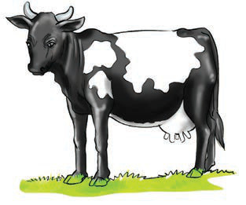

There are two groups of animals: domestic animals and wild animals. Domestic animals are those that are kept at home. These include cattle, goats, sheep, chickens, ducks, dogs, cats, and donkeys. Wild animals are not kept at home. Most wild animals live in the forest. These include lions, elephants, antelopes, hippopotamuses, ostriches, zebras, and buffaloes.
Exercise 3
Observe the following pictures or listen to their descriptions, then answer the questions that follow.

(a)
A black-and-white cow standing on grass.

(b)
A monkey sitting on the ground.

(c)
A gray donkey standing sideways.

(d)
A woolly sheep standing and looking forward.